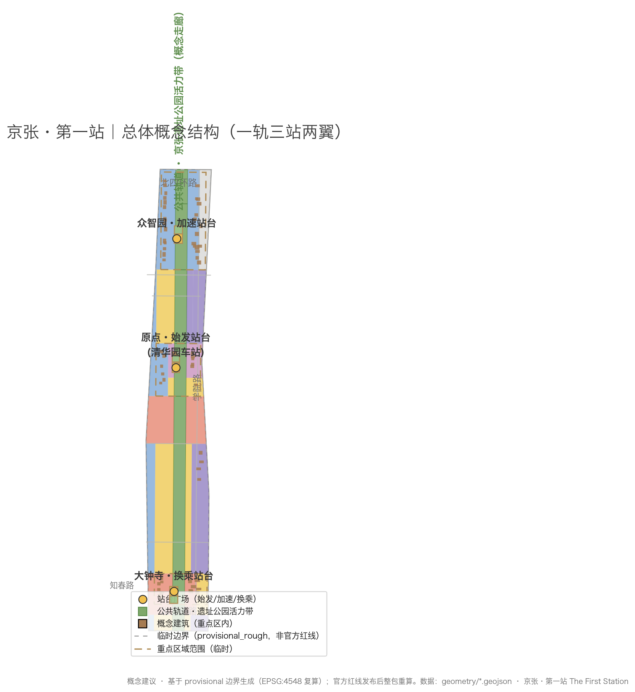
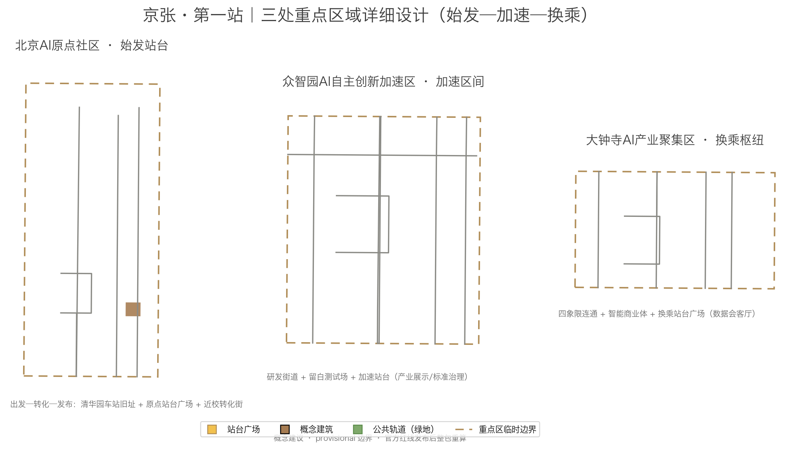

01 Overview Map · Concept & Evidence Chain PROVISIONAL BOUNDARY

Key claim — the First-Station Compact: every AI service and city agent entering the belt must have a "first station": a public trial zone (experience), a validation field (testing), an exit channel (decommissioning), and an audit signal (verifiable status). AI governance becomes an operable spatial interface, not a slogan.
02 Three-Level Scope Framework
| Level | Scope | Design question | Proposal answer |
|---|---|---|---|
| Coordinated research area | 43.6 km² | How to organize a world-class AI ecosystem | "University source — open-source — conversion — experience — global reach" chain |
| Overall design area | 11.4 km² | How to map a stitched urban form | One Rail Three Stations Two Wings + three stitch streets |
| Key detailed design area | 368.4 ha | How to reach detailed depth in three areas | Origin Platform / Acceleration Section / Transfer Hub |
Announced official areas: overall 11,400,000 m²; key areas 3,684,000 m². Provisional recalculation: 11,412,825 m² (+0.11%).
03 Spatial Structure · One Rail, Three Stations, Two Wings
Public Rail
Jing-Zhang Ruins Park vital corridor, north-south about 9.5 km; greenway spine; three stitch streets reconnect east and west.
Three Stations
Origin Platform (AI Origin Community), Acceleration Section (Zhongzhiyuan), Transfer Hub (Dazhongsi) — a "departure-acceleration-transfer" loop.
Two Wings
Zhongguancun Technology Service Wing (factors) and Xiaoyuehe Scenario Empowerment Wing (experience).

04 Detailed Design of the Three Key Areas

| Key area | First-Station role | Spatial moves |
|---|---|---|
| Beijing AI Origin Community | Origin Platform | Origin Platform Plaza + Qinghuayuan Station activation + near-campus conversion street + Departure Garden |
| Zhongzhiyuan AI Acceleration Area | Acceleration Section | R&D streets + reserved test field + Acceleration Platform (display / governance) |
| Dazhongsi AI Industry Cluster | Transfer Hub | Transfer Hub Plaza + four-quadrant connectivity + intelligent commercial blocks + data living room |
Three key areas (3); provisional total 3,692,893 m².
05 Land Use (Conceptual Zones)
Land use follows the national classification codes, covering the full boundary with no gaps or overlaps: residential 0701, R&D 0802, cultural 0803, education 0804, commercial 05, green 1401, reserved 16. Green ratio (conceptual) 21.8%.
06 Transport, Slow Traffic & Blue-Green Public Space

Transport
Three stitch streets + greenway slow-traffic spine (9.5 km) + three platform access roads (transit-oriented) + cycleways/walking links. Conceptual network about 46.7 km (schematic, not redlines).
Blue-green public space
Public rail green corridor + three platform plazas + station gardens. Public space about 174,518 m², ratio 1.5% (conceptual).
07 AI Scenarios & Task Coverage
All six agent tasks are covered: naming/Logo (One-Rail-Three-Stations-Two-Wings + signal language), 8 global ecosystem cases (King's Cross, Kendall Square, Silicon Valley, one-north, Kashiwa-no-ha, Hangzhou, Shenzhen, Tel Aviv), 12 AI scenario cards, 3 test/validation scenarios (signal-tower governance test / First-Station trial / agent workshop), 5 user personas, 3 AI pilgrimage landmarks (Origin Platform Monument / Agent Honor Wall / Global AI Milestone Signal Tower), cultural narrative "Three Departures", and global operation mechanisms (First Station Day / First-Station Club).
| Count metric | Value | Requirement |
|---|---|---|
| AI scenario cards | 12 | ≥ 10 |
| Industry test/validation scenarios | 3 | ≥ 3 |
| User personas | 5 | ≥ 5 |
| Global ecosystem cases | 8 | 5–8 |
| AI pilgrimage landmarks | 3 | ≥ 3 |
All AI scenarios follow data minimization, open sources, explainability, and human review; they are conceptual and not approved operations.
08 Renewal Project List (8 items, conceptual)
| No. | Project | Type |
|---|---|---|
| JZ-01 | Public rail completion and slow-traffic stitching | Public space/transport |
| JZ-02 | Origin Platform Plaza and Qinghuayuan Station activation | Culture/public space |
| JZ-03 | Near-campus conversion street | Renewal/industry services |
| JZ-04 | Zhongzhiyuan R&D streets and reserved test field | Industry/new infrastructure |
| JZ-05 | Dazhongsi Transfer Hub and four-quadrant connectivity | Transit-oriented/commercial |
| JZ-06 | Three stitch streets | Transport/character |
| JZ-07 | Jing-Zhang signal system and scenario pilots | New infrastructure/governance |
| JZ-08 | Annual events such as First Station Day | Operation/brand |
Renewal projects are conceptual (8); dependencies in proposal.en.md Chapter 10.
09 Suggested Phasing
| Phase | Period | Scope | Area (provisional) |
|---|---|---|---|
| Phase 1 · First-Departure Experience | 2026–2028 | Core public rail + three platforms | 2.88 km² |
| Phase 2 · Acceleration Expansion | 2028–2030 | Full three key areas | 3.69 km² |
| Phase 3 · Network Weaving | 2030–2035 | Mid-zone and two wings | 5.99 km² |
Phasing is a suggested sequence (3 phases), not a development-sequencing commitment.
10 Core Metrics (EPSG:4548 recalculation)
Announcement comparison: overall 11.4 km² · key areas 368.4 ha · official controls (FAR/height/density/green ratio) are missing and marked pending; this proposal sets no statutory values.
11 Compliance Matrix Summary (23 mandatory items)
Covers announcement sections 1.3 (3), 1.4 (3), 1.5 (11) and agent.1–agent.6 (6); each mapped to report sections, layers, metrics, drawings, HTML sections, sources, assumptions, and self-checks. See compliance_matrix.json.
| Task domain | Coverage |
|---|---|
| 1.3 Design objectives (ecosystem/form/talent) | ✔ Covered (Ch. 3–4) |
| 1.4 Three-level scope | ✔ Covered (Ch. 2) |
| 1.5 Design tasks (coordinated/overall/key areas) | ✔ Covered (Ch. 3–10) |
| agent.1–6 Agent tasks | ✔ Covered (Ch. 1–10) |
12 Sources
- Pre-qualification Announcement (Haidian Branch, BCMNR; A0 official public)
- Agent open-call taskbook (cleared) and local standard snapshots
- Provisional boundary polygons (provisional_only; generation/display/self-check only)
- Public reports on Qinghuayuan Station history (Beijing Daily / Haidian government)
- Urban Design Measures / Regulatory Detailed Planning Measures / Land-Use Classification Guide (local snapshots)
- Public materials on 8 global AI ecosystem cases
Full sources, publishers, retrieval dates, uses, and limitations are in sources.json.
13 Key Assumptions
- A-001 Three-level scope and three key areas are provisional rough boundaries; full recalculation after official redlines.
- A-002 Public rail corridor (about 270–400 m wide, 9.5 km long) is a conceptual green corridor.
- A-003 Road centerlines and rail corridor are schematic, not redlines/alignments.
- A-004 / A-005 Land-use zones and building footprints are conceptual, not statutory or existing conditions.
- A-009 Regulatory controls (FAR/height/density/green ratio/setbacks) await official attachments.
- A-010 Qinghuayuan Station heritage scope per official publication.
Full list in assumptions.json.
14 Self-Check Status
| Check | Status |
|---|---|
| Boundary trust (provisional disclosure) | ✔ PASS (major note: pending official redlines) |
| Key-area trust (3 provisional) | ✔ PASS (major note) |
| Land-use topology (gap-free, overlap-free) | ✔ PASS |
| Spatial review (EPSG:4548) | ✔ PASS |
| Visual static (no remote resources) | ✔ PASS |
| Professional evidence chain (standards/depth/sources/assumptions) | ✔ PASS |
| Bilingual contract (zh/en aligned) | ✔ PASS |
Full results in self_check.json; final status per CI and maintainer review.